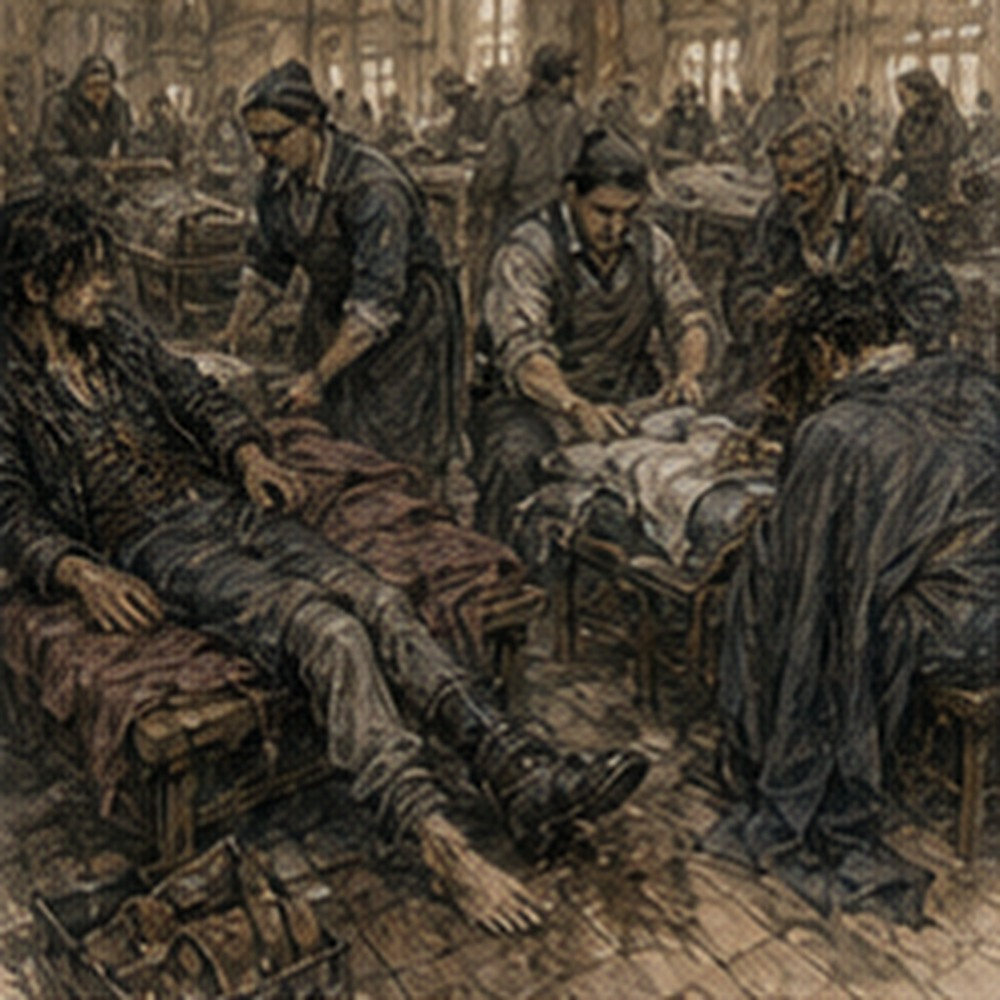

The healer took my shirt. Not metaphorically. She cut it off.
“That was unnecessary,” I said.
“It was stuck.”
“It had buttons.”
“It had blood.”
“Mostly not mine.”
“That is not reassuring.”
The Darrowmere infirmary occupied what had probably been a meeting hall yesterday. Long tables had been pushed against the walls. Bedrolls covered the floor. Somebody had hung blankets between benches to create the illusion of privacy and failed.
Alden sat three places down with his coat off and his shoulder being cleaned by a healer who looked younger than him and much less impressed by him than he preferred. Cal was on my other side. His arm needed stitches. Mine needed soap. This offended him.
“You bled more than me,” he said.
“Most of this is monster.”
“That is worse.”
The healer washing my side stopped.
“Monster?”
“Creature.”
“Better.”
“We do not know what it is.”
“Then stop naming it while I am checking whether it put anything inside you.”
That was a good point. I stopped. For approximately eight seconds.
“Have the bites been poisonous?”
She looked at me.
“Eight seconds.”
“Longer than usual.”
“Quiet.”
I obeyed. Mostly because my head hurt. The headache had stopped being sharp and become dense. A pressure behind both eyes. My channels felt scraped rather than burned. Three Barriers in a short fight, maybe four depending on whether the buckle attempt counted as a cast or merely a failed insult to magic. My palm was split. My hip was bruised. My left shoulder had begun complaining about hitting the wagon.
No bite. No claw wound. No broken bones. Good. The healer pressed two fingers below my ribs. I flinched.
“Bruise.”
“Yes.”
“Deep?”
“No.”
“How do you know?”
“I have had deeper.”
“That is not an answer.”
Everyone was using my own techniques against me now. The world had become intolerable. Alden said, “He does that.” The healer working on him laughed. I turned my head.
“Do what?” I asked.
“Answers a different question,” Alden said.
“I answer useful questions,” I said.
“You answer the one you wanted.”
“That is usually the useful one.”
The first healer tightened a bandage around my palm.
“Not in here.”
I liked her. That was happening too often.
“What’s your name?”
“Doesn’t matter. Hold still.”
Alden laughed hard enough to wince.
“Shoulder?” I asked.
“Shut up,” he said.
Good. He was fine. Not fine. Fine enough. The torn scarf remained tied around his wrist. I avoided looking at it. That took effort. The healer noticed. Of course she did.
“Anything else?”
“No.”
“Dizzy?”
“No.”
“Nausea?”
“No.”
“Light sensitivity?”
“Some.”
“Magic?”
“Yes.”
“How much?”
“Three small Barriers.”
She looked at me for the first time as something other than an inconvenient body.
“Three?”
“Possibly four.”
“What does possibly mean?”
“One failed before it formed properly.”
“What size?”
“Coin to palm.”
“Load?”
“One deflection against a charging creature. One foot disruption. One attempted brace on a harness buckle.”
“Attempted brace?”
“Failed.”
“Pressure casting?”
“Yes.”
She sat back.
“Stop.”
“I have stopped.”
“No more today.”
“That may not be practical.”
“Then become practical.”
I opened my mouth. She pointed toward Alden.
“If he gets bitten because you gave yourself a channel seizure trying to save him, I will charge him for the bed.”
Alden said, “Why me?”
“You look richer.”
“I’m not.”
“Then both of you lose.”
Excellent medical reasoning. I nodded.
“No more magic today.”
She stared.
“That was too easy.”
“I am capable of learning.”
Alden said, “Sometimes.” The healer wrote something on a strip of paper and tied it to my wrist.
“What is this?”
“Restriction.”
“You tagged me?”
“Yes. No casting until someone rechecks you.”
“Today?”
“At least today.”
I looked at Alden. He was enjoying this too much. His healer gave him a smaller strip. Alden read it.
“NO LIFTING LEFT.”
He looked offended.
“Left what?”
“Arm,” she said.
“That is badly written.”
“Go away.”
We went away. Outside, Darrowmere smelled like wet straw, smoke, manure, and boiled grain. Not destroyed. The first thing rumors had gotten wrong was scale. People were still living here. A woman stood in a doorway beating mud from a rug. Two boys carried buckets.
A cooper had reopened his shop despite a watch barricade twenty yards away. Someone sold bread from a cart. The eastern bell tower rose above the roofs, dark stone, square top, one bronze bell visible through the opening. Three quick strokes. Pause. Three. Road warning. The bell sounded again. Alden looked east.
“Still going.”
“Yes.”
“What now?”
We had been told to report. That was the obvious answer. I did not want the obvious answer. My body did. My channels definitely did.
“Report.”
Alden nodded. No argument. That was almost suspicious. The watch command post occupied a grain office beside the central square. Green-coated watch moved in and out carrying messages, maps, water, and once a dead chicken. Nobody explained the chicken. Inside, Captain Harl Doven stood over a table. He was not old. I had expected old.
Command often looked older in memory because responsibility flattened everyone into categories. Doven was maybe thirty-five, narrow-faced, with one side of his hair burned short. Nemi Caul sat in a chair beside him with her injured leg elevated on a crate. She saw us.
“Oh.”
I did not know whether that was good. Doven looked up.
“Road wagon?”
Cal raised a hand.
“Cal Serren. Contract rider.”
“Alden Marr.”
“Greg.”
Doven looked at me.
“You’re the questions.”
“I have been called worse.”
Nemi said, “Not by me.”
“Yet.”
Doven pointed at three empty chairs.
“Sit. Report in order. Do not improve it.”
I sat. I liked him immediately. Cal went first. He had seen the first creature at the orchard wall. He described it. Doven interrupted only for position, distance, direction, and time. Alden went next. His account was shorter. I noticed that. He did not dramatize getting dragged. Did not mention the scarf. Did not mention my Barrier unless directly asked. Then me.
I reported one creature at the wall. Gray. Long-bodied. Four legs. Dark hair or bristles along spine. Abnormal turning behavior. Black blood. Steel penetrated hide. Creature demonstrated rapid lateral redirection without visible ordinary footwork. Doven stopped me.
“Visible to you?”
“Yes.”
“Could you have missed it?”
“Yes.”
“Good.”
I continued. Second creature from west targeted horses rather than us. Possibly relevant. One creature killed on road. Sword remained in body. Three creatures approached from east later. Unknown whether wounded first creature among them. One followed wagon until watch crossbow hit it. I mentioned the ridges under the chest. Doven frowned.
“What ridges?”
“Small hard structures along the underside of the sternum. I saw them when one reared vertically.”
“Bone?”
“I don’t know.”
“Armor?”
“I don’t know.”
“Natural?”
“I don’t know.”
He looked at Nemi. She smiled faintly.
“He does know the phrase.”
“I learned it recently.”
Doven marked the map. There were already six black circles east and north of town. Three red crosses. One blue line along the north road.
“What are the crosses?” I asked.
“Dead creatures recovered.”

My attention sharpened.
“Three?”
“Three bodies.”
“Examined?”
“One.”
“By?”
“Apothecary. Tanner. Watch mage.”
I leaned forward. My wrist tag swung.
NO CASTING.
Doven noticed.
“Keep that on until the infirmary clears you.”
“I dislike it.”
“Most patients do.”
“What did they find?”
Doven looked at me.
“Why do you need to know?”
Unknown architecture. Black blood. Movement without preparation. Hard ridges. If this was magical alteration, I might recognize the shape before I recognized the species. Also, I wanted to know.
“Because if I see another one, I want fewer surprises.”
That was the clean answer. Doven considered.
“Black blood is blood.”
“Meaning?”
“Not tar. Not magical residue. Actual blood. Thick. Warmer than human.”
“Organs?”
“Normal enough to disappoint everyone.”
Alden asked, “Everyone?”
“People prefer monsters to be interesting after they’re dead,” Nemi said.
Correct. Doven continued.
“Four-limbed. Mammal structure, mostly. Stomach had sheep. Teeth are ordinary teeth in an unusual jaw. No embedded metal. No obvious rune work. No collar marks. No brand.”
“Mana?”
“Present.”
That mattered.
“How much?”
Doven looked at Nemi. She answered.
“More than a normal animal. Less than a trained war-beast.”
“Pattern?”
“Watch mage says diffuse.”
I paused. Diffuse. Not structured around a single organ. Not necessarily spellwork.
“Did the mage know the species?”
“No.”
“Did anyone?”
“No.”
Good. Bad. I asked, “Do the chest ridges appear on the bodies?” Doven looked at a note.
“Yes.”
“What are they?”
“Bone growth.”
“Natural?”
Nemi said, “You are going to make that word do too much.” She was right.
“Present in all three?”
“Two. Third was damaged.”
“Same placement?”
“Approximately.”
Alden shifted beside me. I could feel him getting bored. Not bored exactly. Restless. We had nearly died an hour ago and I was discussing sternums. That was a me problem. Doven tapped the map.
“Now the useful part.”
I looked at him.
“That was useful.”
“For tomorrow.”
He tapped again.
“This is today.”
Six black circles. Sightings. The pattern was not random. I saw it. Then I did not. Because I wanted one too quickly. North road. East pens. Orchard route. Canal ditch. No. Not canal. Drainage ditch. Farm lanes. Livestock. Edges.
“They’re avoiding the center,” Alden said.
I looked at him. Doven did too. Alden pointed.
“All these are outside the dense streets.”
“Yes,” Doven said.
“Because people?”
“Maybe.”

“Because walls?” I asked.
“Maybe.”
“Because food,” Nemi said.
She tapped the sheep pens. Then the mule yard. Then a poultry enclosure.
“Most confirmed contact is livestock.”
That changed it. Not an invasion. Not yet. Predation. But predators did not usually ring alarm bells. People did.
“What is the problem right now?” Doven asked.
Alden said, “Keep them out.” Doven shook his head.
“Too large,” Doven said.
I disliked how familiar this was becoming. I looked at the map.
“Know where they are?” I asked.
“Closer,” Doven said.
Nemi said, “Keep people from feeding them.” There. Doven nodded.
“Livestock inside the east quarter is scattered. Pens are damaged. Families evacuated faster than animals could be moved. Creatures keep returning to the same food.”
“So move the animals,” Alden said.
“Yes.”
Simple. Terrible. Doven pointed to three locations.
“Two crews are already working. Third pen is here.”
Alden stood. His healer tag fluttered.
NO LIFTING LEFT.
Doven looked at it.
“Sit.”
Alden sat. I almost laughed.
“Not you,” Doven said.
“Why not?”
“Your shoulder.”
“It works.”
“Your healer says otherwise.”
“She says no lifting.”
“Moving goats involves lifting goats.”
“Why would I lift a goat?”
Nemi said, “You have never moved goats.” Alden stopped.
“I have not.”
“Then trust the tag.”
Doven pointed at me.
“You can walk?”
“Yes.”
“Carry?”
“Yes.”
“Cast?”
“No.”
“Fight?”
“Three.”
He stared. Alden put his face in his hand. Cal laughed. I regretted honesty. Doven said, “What does three mean?”
“It means I can be useful if someone competent is between me and the dangerous thing.”
Doven nodded.
“Finally, a Bronze who understands numbers.”
Alden said, “He does not.”
“Quiet.”
Doven looked at Cal.
“Arm?”
“Works.”
“Good. You two go with Pen Crew Three.”
He meant Cal and me. Alden leaned forward.
“What about me?”
“You stay.”
“No.”
Doven did not react. Alden said it again.
“No.”
There was something different in it. Not defiance for sport. He had come here. He had fought. He had bled. Now someone was telling him to remain in a command post while the job continued. I understood exactly why he hated it. That did not make him right.
Doven said, “Your left shoulder is restricted. Crew Three needs animal handling, hauling, fence work, and possibly fighting. You are poor for three of four.”
“I can fight.”
“Can you?”
Alden’s jaw tightened. Doven pointed at the wrist tag.
“I am not debating your self-image.”
That landed. Hard. Alden stood anyway. Nemi said, “Marr.” He looked at her.
“Sit down.”
He did. Interesting. Authority from Doven made him push. Authority from Nemi made him stop. She had arrived injured from the same roads. Earned information. I filed that away. Bad habit. Cal and I were almost at the door when Alden said, “Greg.” I turned.
“Don’t.”
One word. I knew what he meant. Do not turn this into proving something. Do not cast. Do not chase. Do not get clever. Possibly all three.
“I have a tag.”
“That has never stopped anyone.”
“Good point.”
I left. Pen Three was not a pen. It was a disaster involving goats. There were thirty-one. Someone had counted. That was the only part working. The fence had collapsed along one side. Three goats were on a roof. Two had entered a dye shed. One stood on a cart with the moral certainty of a king.
Five townspeople were trying to move them into a stone-walled courtyard. The goats disagreed. Cal stopped beside me.
“Monsters?”
“Worse.”
A woman holding a broom pointed at us.
“You guild?”
“Unfortunately.”
“Good. Grab that gate.”
I grabbed the gate. No introduction. No briefing. Just gate. Excellent. We moved goats. This was harder than combat in several important ways. A creature wanted something predictable. Goats wanted the collapse of civilization. One refused to move until everyone stopped trying. Another moved only when nobody wanted it to. The cart king jumped onto my back. I made a sound I would deny later.
Cal laughed so hard he lost two goats.
“Useful?” I asked.
“No.”
“Then suffer quietly.”
The broom woman was named Senn. She knew every goat by either name or insult.
“Blue ear goes first.”
“Why?”
“She follows Brownie.”
“Which one is Brownie?”
“The brown one.”
There were eleven brown goats. I stared. Senn said, “City boy?”
“No.”
“Then why are you useless?”
Fair. We got fourteen into the courtyard. Then twenty. Then twenty-six. The roof goats remained. I looked at my restriction tag.
NO CASTING.
I looked at the roof. A tiny Barrier could have nudged one. No. No magic. Fine. I climbed. Senn shouted, “Don’t.” I stopped halfway.
“What?”
“You’ll push them off.”
“I was going to guide them.”
“They’ll jump.”
“Where?”
“On you.”
I climbed down. Professional competence. Again. Senn shook grain into a bucket. The roof goats came down on their own. I hated goats. Twenty-nine. Thirty. Thirty-one. Gate shut. Done. Nobody died. No monster appeared. That was when the screaming started. Not from our courtyard. Two streets east. Cal drew his sword. I did not have one. Right. My sword remained somewhere on the road.
Senn grabbed the broom with both hands.
“What was that?”
I knew the sound. Not creature. Human. Again. Then bells. Not road warning. Different. One long. Two short. Senn went pale.
“What?”
“East breach.”
Cal looked at her.
“Breach?”
“Inside wall.”
The goats exploded into noise behind us. Every one of them faced east. Not random. All at once. Ears forward. Bodies still. I felt the change before I understood it. The air did not move. No smell I noticed. No sound beyond bells. But the goats knew something. Cal said, “Back to command?” Yes. Correct. Report. Wait. No independent pursuit. I looked east.
A black shape crossed the roofline two streets away. Fast. Another followed. Not one creature. Two. Inside. Cal said, “Greg.”
“I see.”
Senn said, “My house.” She was already moving. Wrong direction. East.
“Stop.”
“My daughter.”
There it was. Not goat problem anymore.
“Where?”
“Dyer’s lane.”
Two streets east. Breach. Creatures. Her daughter. Cal grabbed her arm. She hit him with the broom. He released her. She ran. Cal looked at me. Command post was west. Senn was east. Alden was west. No casting. No sword. Three out of ten on a good day. This was not a good day.
“What do we do?” Cal asked.
I hated that he asked me. I hated that I already had an answer.
“We do not chase monsters.”
Senn disappeared around the corner.
“We chase the woman.”
Cal nodded. That was enough. We ran east.